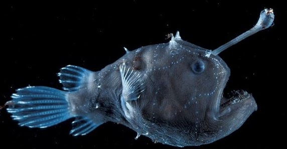

Características principales
El pez linterna tiene una medida de 23 centímetros de longitud. Su cabeza es bastante
grande y la mandíbula es igual de grande que la cabeza. Dispone de dientes delgados y recurvados
para poder enganchar bien a sus presas. Presenta un dimorfismo sexual, por lo que es fácil reconocer
a un macho y una hembra.
